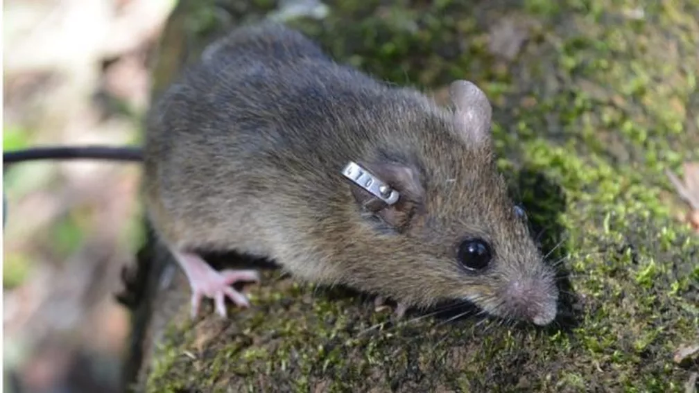
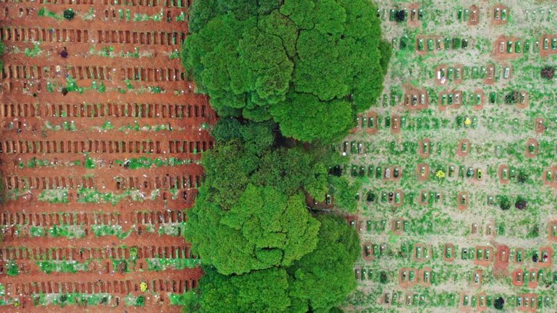
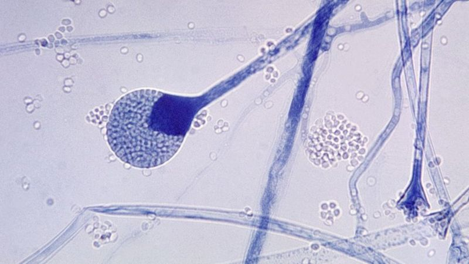

Covid-19 - Falsa sensação de 'melhora' esconde catástrofe da 3ª onda da pandemia
Passados quase quatro meses, Manaus respira aliviada com números de novos casos, ocupação de leitos e óbitos muito melhores que os observados no final de janeiro, quando colapsado, o sistema de saúde não foi capaz de cuidar de seus pacientes, que foram enviados para tratamento em outros Estados. Especialistas apontam, no entanto, para o risco de uma terceira onda ainda mais agressiva e fatal no horizonte não apenas de Manaus, mas de regiões espalhadas por todo o país.
Noticiado por: Estadão (22 mai 2021 - 15h32)
Como infecções por vírus altamente mortal podem cair com reflorestamento da Mata Atlântica
Um novo estudo conduzido por pesquisadores brasileiros mostra que o reflorestamento da Mata Atlântica poderia reduzir a população de roedores que transmitem o mortal hantavírus a humanos.
O vírus causa a chamada hantavirose, uma síndrome cardiopulmonar aguda e grave que pode levar à morte em apenas 72 horas.
Também é altamente letal: 38% dos infectados morrem da doença, segundo a OMS (Organização Mundial da Saúde).
Não há, atualmente, nenhum tratamento, cura ou vacina para a infecção.

Noticiado por: BBC - Londres (26 mai 2021 - 18h01)
Covid: os Estados onde possível '4ª onda' já ameaça virar realidade
No primeiro semestre de 2020, pesquisadores da Universidade Harvard já falavam da possibilidade de um vaivém de quarentenas ao longo da pandemia de coronavírus, causador da covid-19. Ou seja, moradores viveriam uma espécie de abre e fecha constante à medida que as ondas de infecção avançam e recuam.
Um ano depois, grande parte do Brasil já dá sinais da chegada de uma terceira onda da doença, menos de dois meses depois do recuo da onda anterior, que chegou a matar mais de 4.000 pessoas por dia no país
Milhares de casos foram registrados entre pacientes que se recuperaram de covid-19 ou que estavam em processo de recuperação. Portanto, existe uma relação entre a doença e a pandemia de coronavírus.

Noticiado por: BBC News Brasil (24 mai 2021 - 14h57)
Mucormicose: 5 perguntas-chave sobre infecção rara que mutila e mata pacientes de covid na Índia
Quase 9 mil casos de mucormicose, uma infecção causada por um fungo, foram registrados na Índia na última semana. O chamado "fungo preto", que vem causando morte e casos de mutilação, está sendo classificado como "um pesadelo dentro da pandemia" no país.
Alguns pacientes só foram salvos após uma cirurgia de remoção de um de seus olhos. A taxa de mortalidade entre os infectados é de 50%.
Só que a pandemia ocorre em ritmo diferente ao redor do Brasil e há Estados brasileiros que atualmente começam a enfrentar o que poderia ser considerada uma quarta onda de covid-19, como Rio de Janeiro, Amapá, Mato Grosso do Sul, Espírito Santo, Sergipe e Santa Catarina.
